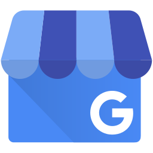

R Ganjar Nursamsi
🇮🇩 Tech Enthusiast | Data Analyst | Ai Automation 🇮🇩
Analisa Bisnis
Tableau Dashboard
r.ganjarnursamsi
Ada yang bisa dibantu?
Roblox Askara
Finufa Gaming
Raden Askara Arizki

Kost Puri Asri Cileunyi
Warnet ROBLOX